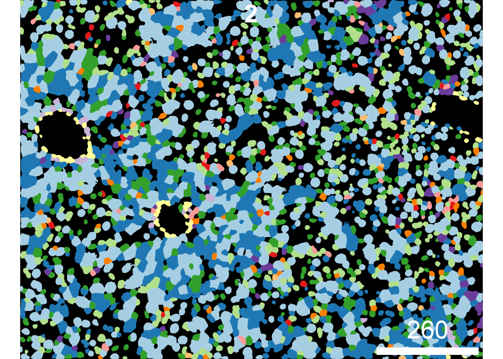

IMC data analysis workflow
Tess Brodie
University of Bern, DBMR, Visceral and Transplantation Surgery lab
Last updated: 2022-08-30
Checks: 5 2
Knit directory: 220707_workflowr/
This reproducible R Markdown analysis was created with workflowr (version 1.7.0). The Checks tab describes the reproducibility checks that were applied when the results were created. The Past versions tab lists the development history.
Great! Since the R Markdown file has been committed to the Git repository, you know the exact version of the code that produced these results.
Great job! The global environment was empty. Objects defined in the global environment can affect the analysis in your R Markdown file in unknown ways. For reproduciblity it’s best to always run the code in an empty environment.
The command set.seed(20220718) was run prior to running
the code in the R Markdown file. Setting a seed ensures that any results
that rely on randomness, e.g. subsampling or permutations, are
reproducible.
Great job! Recording the operating system, R version, and package versions is critical for reproducibility.
- adding condition
- area_overlay
- celloutline_overlay_all
- celloutline_overlay_onecelltype
- celltype_overlay
- celltype_overlay_choosecolors
- celltype_overlay_oneimage
- celltype_overlay_onetargetred
- load-libs
- load data
- meanpixel_overlay_multitarget
- meanpixel_overlay_multitarget_manualcolors
- meanpixel_overlay_onetarget
- session-info-chunk-inserted-by-workflowr
- target_overlay_annotated
- tissue_target
- tissue_targets
- tissue_targets_colorchoose
- tissue_targets_normed_acrossall
- tissue_targets_normed_manual
- tissue_targets_normed_perimage
- unnamed-chunk-1
- unnamed-chunk-2
To ensure reproducibility of the results, delete the cache directory
6_img_vis_cache and re-run the analysis. To have workflowr
automatically delete the cache directory prior to building the file, set
delete_cache = TRUE when running wflow_build()
or wflow_publish().
Using absolute paths to the files within your workflowr project makes it difficult for you and others to run your code on a different machine. Change the absolute path(s) below to the suggested relative path(s) to make your code more reproducible.
| absolute | relative |
|---|---|
| C:/Users/IMC Platform laptop/Users2/Tess/SteinbockCellSegmentation/220707/220707_workflowr | . |
Great! You are using Git for version control. Tracking code development and connecting the code version to the results is critical for reproducibility.
The results in this page were generated with repository version db869f5. See the Past versions tab to see a history of the changes made to the R Markdown and HTML files.
Note that you need to be careful to ensure that all relevant files for
the analysis have been committed to Git prior to generating the results
(you can use wflow_publish or
wflow_git_commit). workflowr only checks the R Markdown
file, but you know if there are other scripts or data files that it
depends on. Below is the status of the Git repository when the results
were generated:
Ignored files:
Ignored: .Rhistory
Ignored: .Rproj.user/
Ignored: analysis/.Rhistory
Ignored: analysis/0_prep_data_cache/
Ignored: analysis/1_QC_mask_cache/
Ignored: analysis/2_batch_effect_correction_cache/
Ignored: analysis/3_dim_red_cache/
Ignored: analysis/4_cell_annotation_cache/
Ignored: analysis/5_sc_vis_cache/
Ignored: analysis/6_img_vis_cache/
Ignored: analysis/7_spatial_vis_cache/
Untracked files:
Untracked: Rplot.png
Untracked: UMAP_correctedvalues.pdf
Untracked: Umap_celltype_overlay.pdf
Untracked: allchannels_histogram.pdf
Untracked: allchannels_multidimplot.pdf
Untracked: alldata_lsecs.rds
Untracked: data/Joseentraining/
Untracked: data/Macro.ijm.ijm.ijm
Untracked: data/cellpose png masks/
Untracked: data/cluster_annotation.png
Untracked: data/cluster_annotation.xlsx
Untracked: data/fiji composite images/
Untracked: data/images.csv
Untracked: data/images.rds
Untracked: data/img/
Untracked: data/intensities/
Untracked: data/masks.rds
Untracked: data/masks/
Untracked: data/neighbors/
Untracked: data/panel.csv
Untracked: data/raw/
Untracked: data/regionprops/
Untracked: data/sample_metadata.xlsx
Untracked: data/spe.rds
Untracked: gated_cells/
Untracked: gated_cells2/
Untracked: marker_umap_corrected.png
Untracked: output/spe0.rds
Untracked: output/spe1.rds
Untracked: output/spe2.rds
Untracked: output/spe3.rds
Untracked: output/spe4.rds
Unstaged changes:
Modified: analysis/_site.yml
Deleted: analysis/about.Rmd
Deleted: analysis/license.Rmd
Note that any generated files, e.g. HTML, png, CSS, etc., are not included in this status report because it is ok for generated content to have uncommitted changes.
These are the previous versions of the repository in which changes were
made to the R Markdown (analysis/6_img_vis.Rmd) and HTML
(docs/6_img_vis.html) files. If you’ve configured a remote
Git repository (see ?wflow_git_remote), click on the
hyperlinks in the table below to view the files as they were in that
past version.
| File | Version | Author | Date | Message |
|---|---|---|---|---|
| Rmd | db869f5 | tessbrodie | 2022-08-30 | Publish the initial files for myproject |
Image visualization
Load packages
library(SpatialExperiment)
library(cytomapper)
library(cowplot)
library(gridGraphics)load data
spe <- readRDS(file.path("output", "spe4.rds"))
images <- readRDS("data/images.rds")
masks <- readRDS("data/masks.rds")
# Sample cells
cur_cells <- sample(seq_len(ncol(spe)), 2000)
# Sample images (this was edited because we changed sample ID names to numbers)
cur_id <- sample(c(1:6), 3)
cur_images <- images[cur_id,]
cur_masks <- masks[cur_id,]Pixel visualization (Targets with dashes need quotes)
plotPixels(images,
colour_by = "E-cadherin",
bcg = list("E-cadherin" = c(0, 10, 1)))plotPixels(images,
colour_by = c("E-cadherin","CD206", "HNFa", "CD3e", "CD19", "CD31"),
bcg = list("E-cadherin" = c(0, 10, 1),
CD206 = c(0, 10, 1),
HNFa = c(0, 10, 1),
CD3e = c(0, 10, 1),
CD19 = c(0, 10, 1),
CD31 = c(0, 10, 1)))plotPixels(images,
colour_by = c("CD206", "HNFa", "E-cadherin"),
bcg = list(CD206 = c(0, 20, 1),
HNFa = c(0, 20, 1),
"E-cadherin" = c(0, 20, 1)),
colour = list(CD206 = c("black", "burlywood1"),
HNFa = c("black", "cyan2"),
"E-cadherin" = c("black", "firebrick1")))
# 0 - 1 channel scaling across all images
norm_images <- normalize(images)
# Clip channel at 0.2
norm_images <- normalize(norm_images, inputRange = c(0, 0.2))
plotPixels(norm_images,
colour_by = c("E-cadherin","CD206", "HNFa", "CD3e", "CD19", "CD31"))# 0 - 1 channel scaling per image
norm_images <- normalize(images, separateImages = TRUE)
# Clip channel at 0.2
norm_images <- normalize(norm_images, inputRange = c(0, 0.2))
plotPixels(norm_images,
colour_by = c("E-cadherin","CD206", "HNFa", "CD3e", "CD19", "CD31"))
# 0 - 1 channel scaling per image
norm_images <- normalize(images,
separateImages = TRUE,
inputRange = list("E-cadherin" = c(0, 10),
CD206 = c(0, 10),
HNFa = c(0, 10),
CD3e = c(0, 10),
CD19 = c(0, 10),
CD31 = c(0, 10)))
plotPixels(norm_images,
colour_by = c("E-cadherin","CD206", "HNFa", "CD3e", "CD19", "CD31"))Cell type overlays
plotCells(masks,
object = spe,
cell_id = "ObjectNumber", img_id = "sample_id",
colour_by = "celltype")
plotCells(masks,
object = spe,
cell_id = "ObjectNumber", img_id = "sample_id",
colour_by = "celltype")
#colour = list(celltype = metadata(spe)$color_vectors$celltype))KC <- spe[,spe$celltype == "KC"]
plotCells(masks,
object = KC,
cell_id = "ObjectNumber", img_id = "sample_id",
colour_by = "celltype",
colour = list(celltype = c(KC = "red")),
missing_colour = "white")Cell area overlay
plotCells(masks,
object = spe,
cell_id = "ObjectNumber", img_id = "sample_id",
colour_by = "area")Asinh-transformed mean pixel intensities
plotCells(masks,
object = spe,
cell_id = "ObjectNumber", img_id = "sample_id",
colour_by = "E-cadherin",
exprs_values = "exprs")plotCells(masks,
object = spe,
cell_id = "ObjectNumber", img_id = "sample_id",
colour_by = c("E-cadherin","CD206", "HNFa", "CD3e", "CD19", "CD31"),
exprs_values = "exprs")plotCells(masks,
object = spe,
cell_id = "ObjectNumber", img_id = "sample_id",
colour_by = c("E-cadherin","CD206", "HNFa"),
exprs_values = "exprs",
colour = list("E-cadherin" = c("black", "burlywood1"),
CD206 = c("black", "cyan2"),
HNFa = c("black", "firebrick1")))Outlining cells on images
plotPixels(image = images,
mask = masks,
object = spe,
cell_id = "ObjectNumber", img_id = "sample_id",
colour_by = c("E-cadherin","CD206", "HNFa"),
outline_by = "celltype",
bcg = list("E-cadherin" = c(0, 20, 1),
CD206 = c(0, 20, 1),
HNFa = c(0, 20, 1)),
#colour = list(celltype = metadata(spe)$color_vectors$celltype),
thick = TRUE)CD8 <- spe[,spe$celltype == "CD8"]
plotPixels(image = images,
mask = masks,
object = CD8,
cell_id = "ObjectNumber", img_id = "sample_id",
colour_by = c("CD3e", "CD8a"),
outline_by = "celltype",
bcg = list(CD3e = c(0, 20, 1),
CD8a = c(0, 20, 1)),
colour = list(celltype = c("CD8" = "white")),
thick = TRUE)Adjusting plot annotation (need to add conditions for this to work)
mcols(images)$condition <- c("WT", "WT", "NAFLD", "NAFLD", "NASH", "NASH")
mcols(masks)$condition <- c("WT", "WT", "NAFLD", "NAFLD", "NASH", "NASH")plotPixels(images,
colour_by = c("E-cadherin","CD206", "HNFa", "CD3e", "CD19", "CD31"),
bcg = list("E-cadherin" = c(0, 20, 1),
CD206 = c(0, 10, 1),
HNFa = c(0, 10, 1),
CD3e = c(0, 10, 1),
CD19 = c(0, 10, 1),
CD31 = c(0, 10, 1)),
scale_bar = list(length = 100,
label = expression("100 " ~ mu * "m"),
cex = 0.7,
lwidth = 10,
colour = "grey",
position = "bottomleft",
margin = c(5,5),
frame = 3),
image_title = list(text = mcols(images)$condition,
position = "topright",
colour = "grey",
margin = c(5,5),
font = .5,
cex = 2),
legend = list(colour_by.title.cex = 0.7,
margin = 10),
margin = 40)
Display individual images
plotCells(masks,
object = spe,
cell_id = "ObjectNumber", img_id = "sample_id",
colour_by = "celltype",
#colour = list(celltype = metadata(spe)$color_vectors$celltype),
display = "single",
legend = NULL)
Save and return images
out1 <- plotCells(masks,
object = spe,
cell_id = "ObjectNumber", img_id = "sample_id",
colour_by = "celltype",
#colour = list(celltype = metadata(spe)$color_vectors$celltype),
return_plot = TRUE)out2 <- plotCells(masks,
object = spe,
cell_id = "ObjectNumber", img_id = "sample_id",
colour_by = c("HNFa", "CD3e", "CD206"),
exprs_values = "exprs",
return_plot = TRUE)p1 <- ggdraw(out1$plot, clip = "on")
p2 <- ggdraw(out2$plot, clip = "on")
plot_grid(p1, p2)
sessionInfo()R version 4.2.1 (2022-06-23 ucrt)
Platform: x86_64-w64-mingw32/x64 (64-bit)
Running under: Windows 10 x64 (build 19044)
Matrix products: default
locale:
[1] LC_COLLATE=English_Switzerland.utf8 LC_CTYPE=English_Switzerland.utf8
[3] LC_MONETARY=English_Switzerland.utf8 LC_NUMERIC=C
[5] LC_TIME=English_Switzerland.utf8
attached base packages:
[1] grid stats4 stats graphics grDevices utils datasets
[8] methods base
other attached packages:
[1] gridGraphics_0.5-1 cowplot_1.1.1
[3] cytomapper_1.8.0 EBImage_4.38.0
[5] SpatialExperiment_1.6.0 SingleCellExperiment_1.18.0
[7] SummarizedExperiment_1.26.1 Biobase_2.56.0
[9] GenomicRanges_1.48.0 GenomeInfoDb_1.32.2
[11] IRanges_2.30.0 S4Vectors_0.34.0
[13] BiocGenerics_0.42.0 MatrixGenerics_1.8.1
[15] matrixStats_0.62.0 workflowr_1.7.0
loaded via a namespace (and not attached):
[1] scattermore_0.8 flowWorkspace_4.8.0
[3] R.methodsS3_1.8.2 tidyr_1.2.0
[5] ggplot2_3.3.6 knitr_1.39
[7] irlba_2.3.5 multcomp_1.4-20
[9] DelayedArray_0.22.0 R.utils_2.12.0
[11] data.table_1.14.2 RCurl_1.98-1.7
[13] doParallel_1.0.17 generics_0.1.3
[15] flowCore_2.8.0 ScaledMatrix_1.4.0
[17] callr_3.7.2 terra_1.5-34
[19] TH.data_1.1-1 ggpointdensity_0.1.0
[21] xml2_1.3.3 httpuv_1.6.5
[23] assertthat_0.2.1 viridis_0.6.2
[25] xfun_0.31 jquerylib_0.1.4
[27] evaluate_0.16 promises_1.2.0.1
[29] fansi_1.0.3 Rgraphviz_2.40.0
[31] igraph_1.3.4 DBI_1.1.3
[33] CATALYST_1.20.1 htmlwidgets_1.5.4
[35] purrr_0.3.4 ellipsis_0.3.2
[37] dplyr_1.0.9 ggcyto_1.24.1
[39] ggnewscale_0.4.7 ggpubr_0.4.0
[41] backports_1.4.1 cytolib_2.8.0
[43] svgPanZoom_0.3.4 RcppParallel_5.1.5
[45] deldir_1.0-6 sparseMatrixStats_1.8.0
[47] vctrs_0.4.1 abind_1.4-5
[49] cachem_1.0.6 ggforce_0.3.3
[51] aws.signature_0.6.0 svglite_2.1.0
[53] cluster_2.1.3 crayon_1.5.1
[55] drc_3.0-1 edgeR_3.38.1
[57] pkgconfig_2.0.3 tweenr_1.0.2
[59] vipor_0.4.5 rlang_1.0.4
[61] lifecycle_1.0.1 sandwich_3.0-2
[63] rsvd_1.0.5 rprojroot_2.0.3
[65] polyclip_1.10-0 graph_1.74.0
[67] tiff_0.1-11 Matrix_1.4-1
[69] raster_3.5-21 carData_3.0-5
[71] Rhdf5lib_1.18.2 zoo_1.8-10
[73] base64enc_0.1-3 beeswarm_0.4.0
[75] whisker_0.4 ggridges_0.5.3
[77] GlobalOptions_0.1.2 processx_3.7.0
[79] pheatmap_1.0.12 png_0.1-7
[81] viridisLite_0.4.0 rjson_0.2.21
[83] bitops_1.0-7 shinydashboard_0.7.2
[85] getPass_0.2-2 R.oo_1.25.0
[87] ConsensusClusterPlus_1.60.0 rhdf5filters_1.8.0
[89] DelayedMatrixStats_1.18.0 shape_1.4.6
[91] stringr_1.4.0 jpeg_0.1-9
[93] rstatix_0.7.0 ggsignif_0.6.3
[95] aws.s3_0.3.21 beachmat_2.12.0
[97] scales_1.2.1 magrittr_2.0.3
[99] plyr_1.8.7 hexbin_1.28.2
[101] zlibbioc_1.42.0 compiler_4.2.1
[103] dqrng_0.3.0 RColorBrewer_1.1-3
[105] plotrix_3.8-2 clue_0.3-61
[107] cli_3.3.0 XVector_0.36.0
[109] ncdfFlow_2.42.1 ps_1.7.1
[111] FlowSOM_2.4.0 MASS_7.3-58
[113] tidyselect_1.1.2 stringi_1.7.8
[115] RProtoBufLib_2.8.0 highr_0.9
[117] yaml_2.3.5 BiocSingular_1.12.0
[119] locfit_1.5-9.6 latticeExtra_0.6-30
[121] ggrepel_0.9.1 sass_0.4.2
[123] tools_4.2.1 parallel_4.2.1
[125] CytoML_2.8.0 circlize_0.4.15
[127] rstudioapi_0.14 foreach_1.5.2
[129] git2r_0.30.1 gridExtra_2.3
[131] farver_2.1.1 Rtsne_0.16
[133] DropletUtils_1.16.0 digest_0.6.29
[135] shiny_1.7.2 Rcpp_1.0.9
[137] car_3.1-0 broom_1.0.0
[139] scuttle_1.6.2 later_1.3.0
[141] httr_1.4.4 ComplexHeatmap_2.12.1
[143] colorspace_2.0-3 XML_3.99-0.10
[145] fs_1.5.2 splines_4.2.1
[147] RBGL_1.72.0 scater_1.24.0
[149] sp_1.5-0 systemfonts_1.0.4
[151] xtable_1.8-4 jsonlite_1.8.0
[153] R6_2.5.1 pillar_1.8.1
[155] htmltools_0.5.3 mime_0.12
[157] nnls_1.4 glue_1.6.2
[159] fastmap_1.1.0 BiocParallel_1.30.3
[161] BiocNeighbors_1.14.0 fftwtools_0.9-11
[163] codetools_0.2-18 mvtnorm_1.1-3
[165] utf8_1.2.2 lattice_0.20-45
[167] bslib_0.4.0 tibble_3.1.7
[169] curl_4.3.2 ggbeeswarm_0.6.0
[171] colorRamps_2.3.1 gtools_3.9.3
[173] magick_2.7.3 interp_1.1-3
[175] survival_3.3-1 limma_3.52.2
[177] rmarkdown_2.15 munsell_0.5.0
[179] GetoptLong_1.0.5 rhdf5_2.40.0
[181] GenomeInfoDbData_1.2.8 iterators_1.0.14
[183] HDF5Array_1.24.1 reshape2_1.4.4
[185] gtable_0.3.0